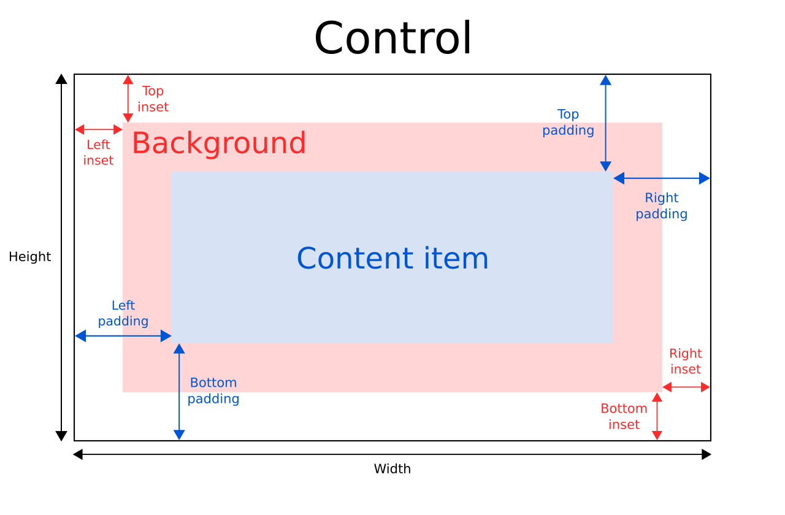

Control QML Type
Abstract base type providing functionality common to all controls. More...
| Import Statement: | import QtQuick.Controls |
| Inherits: | |
| Inherited By: | AbstractButton, BusyIndicator, ComboBox, Container, DayOfWeekRow, Dial, MenuSeparator, MonthGrid, PageIndicator, Pane, ProgressBar, RangeSlider, ScrollBar, ScrollIndicator, SelectionRectangle, Slider, SpinBox, StackView, ToolSeparator, Tumbler, and WeekNumberColumn |
Properties
- availableHeight : real
- availableWidth : real
- background : Item
- bottomInset : real
(since QtQuick.Controls 2.5 (Qt 5.12)) - bottomPadding : real
- contentItem : Item
- focusReason : enumeration
- font : font
- horizontalPadding : real
(since QtQuick.Controls 2.5 (Qt 5.12)) - hoverEnabled : bool
- hovered : bool
- implicitBackgroundHeight : real
(since QtQuick.Controls 2.5 (Qt 5.12)) - implicitBackgroundWidth : real
(since QtQuick.Controls 2.5 (Qt 5.12)) - implicitContentHeight : real
(since QtQuick.Controls 2.5 (Qt 5.12)) - implicitContentWidth : real
(since QtQuick.Controls 2.5 (Qt 5.12)) - leftInset : real
(since QtQuick.Controls 2.5 (Qt 5.12)) - leftPadding : real
- locale : Locale
- mirrored : bool
- padding : real
- rightInset : real
(since QtQuick.Controls 2.5 (Qt 5.12)) - rightPadding : real
- spacing : real
- topInset : real
(since QtQuick.Controls 2.5 (Qt 5.12)) - topPadding : real
- verticalPadding : real
(since QtQuick.Controls 2.5 (Qt 5.12)) - visualFocus : bool
- wheelEnabled : bool
Detailed Description
Control is the base type of user interface controls. It receives input events from the window system, and paints a representation of itself on the screen.
Control Layout
The following diagram illustrates the layout of a typical control:

The implicitWidth and implicitHeight of a control are typically based on the implicit sizes of the background and the content item plus any insets and paddings. These properties determine how large the control will be when no explicit width or height is specified.
The geometry of the contentItem is determined by the padding. The following example reserves 10px padding between the boundaries of the control and its content:
Control { padding: 10 contentItem: Text { text: "Content" } }
The background item fills the entire width and height of the control, unless insets or an explicit size have been given for it. Background insets are useful for extending the touchable/interactive area of a control without affecting its visual size. This is often used on touch devices to ensure that a control is not too small to be interacted with by the user. Insets affect the size of the control, and hence will affect how much space they take up in a layout, for example.
Negative insets can be used to make the background larger than the control. The following example uses negative insets to place a shadow outside the control's boundaries:
Control { topInset: -2 leftInset: -2 rightInset: -6 bottomInset: -6 background: BorderImage { source: ":/images/shadowed-background.png" } }
Event Handling
All controls, except non-interactive indicators, do not let clicks and touches through to items below them. For example, the console.log() call in the example below will never be executed when clicking on the Pane, because the MouseArea is below it in the scene:
MouseArea { anchors.fill: parent onClicked: console.log("MouseArea was clicked") Pane { anchors.fill: parent } }
Wheel events are consumed by controls if wheelEnabled is true.
See also ApplicationWindow, Container, and Using Qt Quick Controls types in property declarations.
Property Documentation
availableHeight : real |
This property holds the height available to the contentItem after deducting vertical padding from the height of the control.
See also Control Layout, padding, topPadding, and bottomPadding.
availableWidth : real |
This property holds the width available to the contentItem after deducting horizontal padding from the width of the control.
See also Control Layout, padding, leftPadding, and rightPadding.
background : Item |
This property holds the background item.
Button { id: control text: qsTr("Button") background: Rectangle { implicitWidth: 100 implicitHeight: 40 opacity: enabled ? 1 : 0.3 color: control.down ? "#d0d0d0" : "#e0e0e0" } }
Note: If the background item has no explicit size specified, it automatically follows the control's size. In most cases, there is no need to specify width or height for a background item.
Note: Most controls use the implicit size of the background item to calculate the implicit size of the control itself. If you replace the background item with a custom one, you should also consider providing a sensible implicit size for it (unless it is an item like Image which has its own implicit size).
See also Control Layout.
bottomInset : real |
This property holds the bottom inset for the background.
This property was introduced in QtQuick.Controls 2.5 (Qt 5.12).
See also Control Layout and topInset.
bottomPadding : real |
This property holds the bottom padding. Unless explicitly set, the value is equal to verticalPadding.
See also Control Layout, padding, topPadding, verticalPadding, and availableHeight.
contentItem : Item |
This property holds the visual content item.
Button { id: control text: qsTr("Button") contentItem: Label { text: control.text verticalAlignment: Text.AlignVCenter } }
Note: The content item is automatically positioned and resized to fit within the padding of the control. Bindings to the x, y, width, and height properties of the contentItem are not respected.
Note: Most controls use the implicit size of the content item to calculate the implicit size of the control itself. If you replace the content item with a custom one, you should also consider providing a sensible implicit size for it (unless it is an item like Text which has its own implicit size).
See also Control Layout and padding.
focusReason : enumeration |
This property holds the reason of the last focus change.
Note: This property does not indicate whether the item has active focus, but the reason why the item either gained or lost focus.
| Constant | Description |
|---|---|
Qt.MouseFocusReason | A mouse action occurred. |
Qt.TabFocusReason | The Tab key was pressed. |
Qt.BacktabFocusReason | A Backtab occurred. The input for this may include the Shift or Control keys; e.g. Shift+Tab. |
Qt.ActiveWindowFocusReason | The window system made this window either active or inactive. |
Qt.PopupFocusReason | The application opened/closed a pop-up that grabbed/released the keyboard focus. |
Qt.ShortcutFocusReason | The user typed a label's buddy shortcut |
Qt.MenuBarFocusReason | The menu bar took focus. |
Qt.OtherFocusReason | Another reason, usually application-specific. |
See also Item::activeFocus and visualFocus.
font : font |
This property holds the font currently set for the control.
This property describes the control's requested font. The font is used by the control's style when rendering standard components, and is available as a means to ensure that custom controls can maintain consistency with the native platform's native look and feel. It's common that different platforms, or different styles, define different fonts for an application.
The default font depends on the system environment. ApplicationWindow maintains a system/theme font which serves as a default for all controls. There may also be special font defaults for certain types of controls. You can also set the default font for controls by either:
- passing a custom font to QGuiApplication::setFont(), before loading the QML; or
- specifying the fonts in the qtquickcontrols2.conf file.
Finally, the font is matched against Qt's font database to find the best match.
Control propagates explicit font properties from parent to children. If you change a specific property on a control's font, that property propagates to all of the control's children, overriding any system defaults for that property.
Page { font.family: "Courier" Column { Label { text: qsTr("This will use Courier...") } Switch { text: qsTr("... and so will this") } } }
For the full list of available font properties, see the font QML Value Type documentation.
horizontalPadding : real |
This property holds the horizontal padding. Unless explicitly set, the value is equal to padding.
This property was introduced in QtQuick.Controls 2.5 (Qt 5.12).
See also Control Layout, padding, leftPadding, rightPadding, and verticalPadding.
hoverEnabled : bool |
This property determines whether the control accepts hover events. The default value is Qt.styleHints.useHoverEffects.
Setting this property propagates the value to all child controls that do not have hoverEnabled explicitly set.
You can also enable or disable hover effects for all Qt Quick Controls applications by setting the QT_QUICK_CONTROLS_HOVER_ENABLED environment variable.
See also hovered.
hovered : bool |
This property holds whether the control is hovered.
See also hoverEnabled.
implicitBackgroundHeight : real |
This property holds the implicit background height.
The value is equal to background ? background.implicitHeight : 0.
This is typically used, together with implicitContentHeight, to calculate the implicitHeight:
Control { implicitHeight: Math.max(implicitBackgroundHeight + topInset + bottomInset, implicitContentHeight + topPadding + bottomPadding) }
This property was introduced in QtQuick.Controls 2.5 (Qt 5.12).
See also implicitBackgroundWidth and implicitContentHeight.
implicitBackgroundWidth : real |
This property holds the implicit background width.
The value is equal to background ? background.implicitWidth : 0.
This is typically used, together with implicitContentWidth, to calculate the implicitWidth:
Control { implicitWidth: Math.max(implicitBackgroundWidth + leftInset + rightInset, implicitContentWidth + leftPadding + rightPadding) }
This property was introduced in QtQuick.Controls 2.5 (Qt 5.12).
See also implicitBackgroundHeight and implicitContentWidth.
implicitContentHeight : real |
This property holds the implicit content height.
For basic controls, the value is equal to contentItem ? contentItem.implicitHeight : 0. For types that inherit Container or Pane, the value is calculated based on the content children.
This is typically used, together with implicitBackgroundHeight, to calculate the implicitHeight:
Control { implicitHeight: Math.max(implicitBackgroundHeight + topInset + bottomInset, implicitContentHeight + topPadding + bottomPadding) }
This property was introduced in QtQuick.Controls 2.5 (Qt 5.12).
See also implicitContentWidth and implicitBackgroundHeight.
implicitContentWidth : real |
This property holds the implicit content width.
For basic controls, the value is equal to contentItem ? contentItem.implicitWidth : 0. For types that inherit Container or Pane, the value is calculated based on the content children.
This is typically used, together with implicitBackgroundWidth, to calculate the implicitWidth:
Control { implicitWidth: Math.max(implicitBackgroundWidth + leftInset + rightInset, implicitContentWidth + leftPadding + rightPadding) }
This property was introduced in QtQuick.Controls 2.5 (Qt 5.12).
See also implicitContentHeight and implicitBackgroundWidth.
leftInset : real |
This property holds the left inset for the background.
This property was introduced in QtQuick.Controls 2.5 (Qt 5.12).
See also Control Layout and rightInset.
leftPadding : real |
This property holds the left padding. Unless explicitly set, the value is equal to horizontalPadding.
See also Control Layout, padding, rightPadding, horizontalPadding, and availableWidth.
locale : Locale |
This property holds the locale of the control.
It contains locale specific properties for formatting data and numbers. Unless a special locale has been set, this is either the parent's locale or the default locale.
Control propagates the locale from parent to children. If you change the control's locale, that locale propagates to all of the control's children, overriding the system default locale.
See also mirrored.
mirrored : bool |
This property holds whether the control is mirrored.
This property is provided for convenience. A control is considered mirrored when its visual layout direction is right-to-left; that is, when LayoutMirroring.enabled is true.
As of Qt 6.2, the locale property no longer affects this property.
See also LayoutMirroring and Right-to-left User Interfaces.
padding : real |
This property holds the default padding.
Padding adds a space between each edge of the content item and the background item, effectively controlling the size of the content item. To specify a padding value for a specific edge of the control, set its relevant property:
Note: Different styles may specify the default padding for certain controls in different ways, and these ways may change over time as the design guidelines that the style is based on evolve. To ensure that these changes don't affect the padding values you have specified, it is best to use the most specific properties available. For example, rather than setting the padding property:
padding: 0
set each specific property instead:
leftPadding: 0 rightPadding: 0 topPadding: 0 bottomPadding: 0
See also Control Layout, availableWidth, availableHeight, topPadding, leftPadding, rightPadding, and bottomPadding.
rightInset : real |
This property holds the right inset for the background.
This property was introduced in QtQuick.Controls 2.5 (Qt 5.12).
See also Control Layout and leftInset.
rightPadding : real |
This property holds the right padding. Unless explicitly set, the value is equal to horizontalPadding.
See also Control Layout, padding, leftPadding, horizontalPadding, and availableWidth.
spacing : real |
This property holds the spacing.
Spacing is useful for controls that have multiple or repetitive building blocks. For example, some styles use spacing to determine the distance between the text and indicator of CheckBox. Spacing is not enforced by Control, so each style may interpret it differently, and some may ignore it altogether.
topInset : real |
This property holds the top inset for the background.
This property was introduced in QtQuick.Controls 2.5 (Qt 5.12).
See also Control Layout and bottomInset.
topPadding : real |
This property holds the top padding. Unless explicitly set, the value is equal to verticalPadding.
See also Control Layout, padding, bottomPadding, verticalPadding, and availableHeight.
verticalPadding : real |
This property holds the vertical padding. Unless explicitly set, the value is equal to padding.
This property was introduced in QtQuick.Controls 2.5 (Qt 5.12).
See also Control Layout, padding, topPadding, bottomPadding, and horizontalPadding.
visualFocus : bool |
This property holds whether the control has visual focus. This property is true when the control has active focus and the focus reason is either Qt.TabFocusReason, Qt.BacktabFocusReason, or Qt.ShortcutFocusReason.
In general, for visualizing key focus, this property is preferred over Item::activeFocus. This ensures that key focus is only visualized when interacting with keys - not when interacting via touch or mouse.
See also Item::focusReason and Item::activeFocus.
wheelEnabled : bool |
This property determines whether the control handles wheel events. The default value is false.
Note: Care must be taken when enabling wheel events for controls within scrollable items such as Flickable, as the control will consume the events and hence interrupt scrolling of the Flickable.